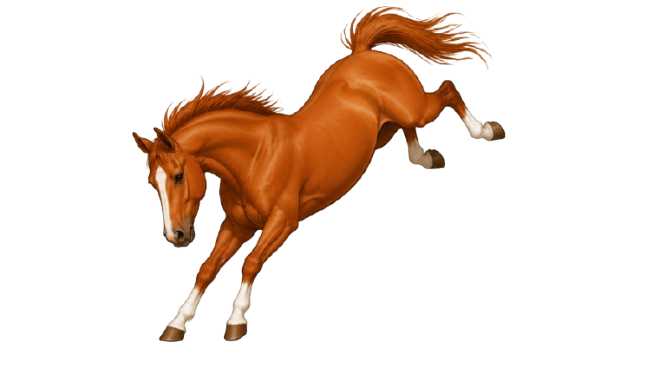
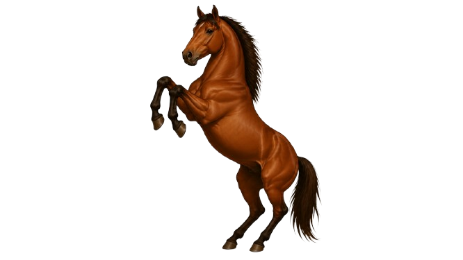
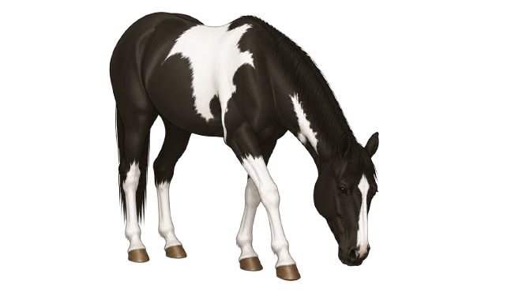
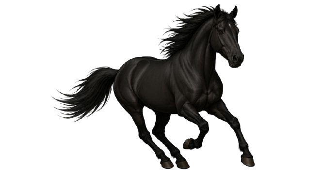
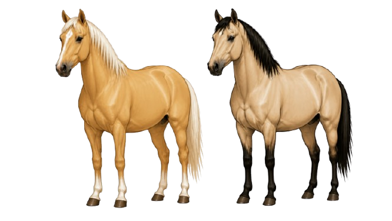
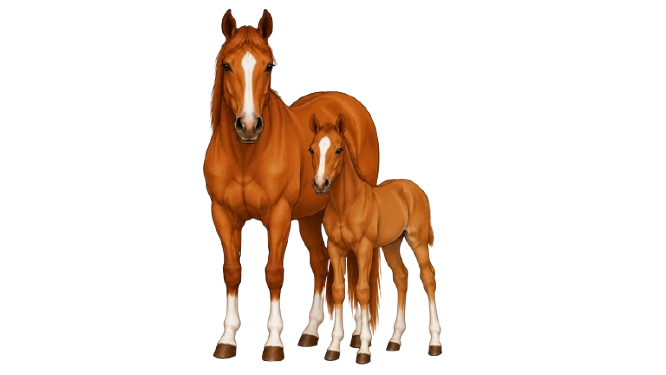
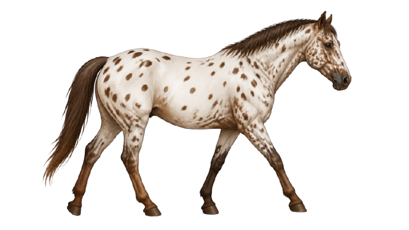
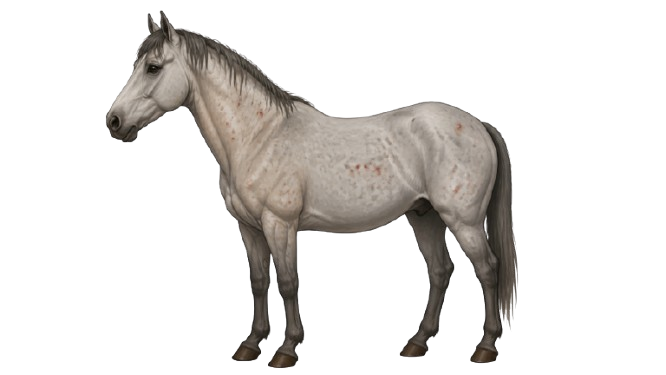

Equine Edu Reference Guide
Equine Edu's Equine Field Guide
Common horse terms, barn words, tack notes, care vocabulary, and safety reminders in one growing guide.
A quick, organized place to look up horse words as you learn. Use the topic filters, search for a term, and come back whenever a new barn word shows up.
Reference Library
Use the topic row like a field-guide filter. The guide is designed for quick checking, not testing.
Common horse terms, barn words, tack notes, care vocabulary, and safety reminders in one growing guide.
A living quick-reference notebook for everyday horse words.
Use it when you hear a term and want the plain meaning fast.
Definitions stay short, clear, and useful for new learners.
Terms are organized by where you may hear them: barn, lesson, tack room, care routine, or safety conversation.
New pages and tabs can be added as the Equine Edu library expands.
Choose a topic, jump with the tabs, or search for a term.

Words used to describe what a horse is, how old it is, and basic identifying traits.
An equine usually measured over 14.2 hands high at maturity.
An equine usually 14.2 hands high or under at maturity, though breed type also matters.
A young horse under one year old.
A young horse between one and two years old.
An adult female horse.
A castrated male horse.
An adult male horse that has not been castrated.
A group of horses with shared ancestry, traits, and registry standards.
The horse's coat color, such as bay, black, chestnut, gray, or palomino.
A visible white pattern or identifying area on the face, legs, or body.
A quick place to check the first words learners hear when identifying horses.

Common outside body-part words used in lessons, grooming, horse descriptions, and tack fitting.
The top area of the head between or just behind the ears.
The lower part of the face around the mouth and nostrils.
The high area where the neck and back meet above the shoulders.
The large ribcage area of the body.
The top of the hindquarters behind the back.
The joint above the pastern and hoof.
The area between the fetlock and hoof.
The hard foot of the horse.
These words help locate what someone is seeing, grooming, fitting, or discussing.

Words for how a horse moves, including basic rhythm and speed terms.
A pattern of movement or footfalls, such as walk, trot, canter, or gallop.
A slow four-beat gait.
A two-beat gait faster than the walk.
A three-beat gait faster than the trot.
The fastest natural gait.
The pattern or timing of footfalls in a gait.
One complete movement cycle of the horse's legs.
A horse that may perform additional smooth intermediate gaits.
Gait terms describe rhythm, speed, and the way a horse travels.

Common equipment words beginners hear around handling, grooming, and riding.
Equipment used for riding, driving, or handling horses.
Equipment placed on the horse's back for riding.
Headgear used when riding or driving a horse.
Straps held by a rider or handler to help communicate.
A piece of tack that sits in the horse's mouth and connects to the bridle and reins.
Headgear used for leading and tying under supervision.
A rope attached to a halter for leading or handling.
A tool used to clean the bottom of the hoof.
Tack names are easier to remember when each item has a clear job.

Vocabulary for daily horse spaces, routines, feed words, and general barn conversations.
An indoor space where a horse may be kept.
A fenced outdoor area for a horse.
A grass area where horses may graze.
Plant-based feed such as hay or pasture grass.
Time a horse spends outside a stall.
Cleaning and checking the horse's coat, mane, tail, hooves, and body.
Material placed in a stall, such as shavings or straw.
To clean manure and wet bedding from a stall or area.
These words show up in daily routines, chores, feeding conversations, and turnout plans.

Common words students may hear in lessons or educational discussions about riding.
Signals used to communicate with a horse.
A signal that asks the horse to do something.
A riding style or activity, such as English, Western, dressage, or jumping.
To get on a horse.
To get off a horse.
The side toward the center of the arena or circle.
The side away from the center of the arena or circle.
A change from one gait, speed, or movement to another.
Instruction words help learners understand directions without turning this guide into a riding manual.

Beginner-safe words for wellness observations, safe handling, and asking for help.
Uneven movement or signs of pain when a horse moves.
A way of describing whether a horse appears too thin, too heavy, or in a healthy range.
Basic health measurements such as temperature, pulse, and respiration.
A broad term for abdominal pain in horses. It can be serious and needs adult or veterinary attention.
Immediate basic care given before professional help when needed.
The person leading, holding, or working with a horse from the ground.
How a person moves toward a horse. Calm, visible, and respectful movement matters.
The safe area people maintain around themselves and the horse.
These words help learners describe concerns clearly and know when to ask for help.

Normal ranges, what to watch, and when to call a vet — based on AAEP guidelines and the Merck Veterinary Manual.
Sources: AAEP Horse Owner's Veterinary Handbook; Merck Veterinary Manual, Equine Section.
Quick reference for checking each measurement at the barn.
Living Guide
This reference can expand as the platform grows. New terms can be added to existing tabs, or new tabs can be introduced for shows, disciplines, records, grooming, nutrition, and more.